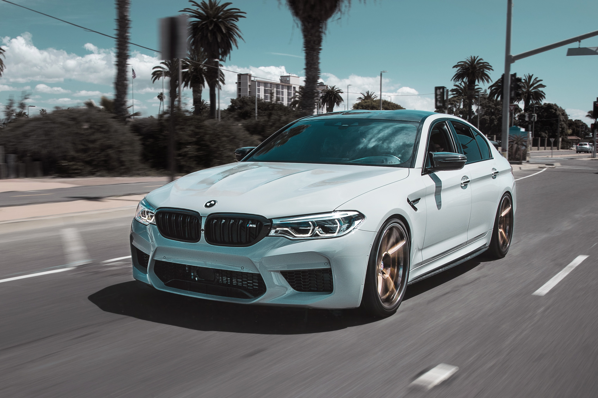

BMW(바이에른 원동기공업 주식화사)는 독일 바이에른주 뮌헨에 본사를 두고 있는 자동차, 모터사이클 및 엔진 제조 회사이다. 부속 브랜드로 영국의 자동차 제조사 롤스로이스 자동차와 BMW 미니를 두고 있다. 영국의 SUV 제조사 랜드로버도 보유하였으나 포드 모터 컴퍼니에 매각하였고, 현재는 재규어 랜드로버를 관리하는 타타 자동차가 소유하고 있다.BMW는 메르세데스-벤츠, 아우디와 더불어 독일의 3대 고급차 제조사로 손꼽히나, 2018년 연쇄적인 차량 화재 발생으로 인해 한국에서의 이미지가 실추되었다.
